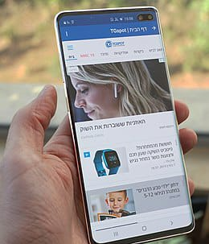

Disciplinas
DESENVOLVIMENTO PARA DISPOSITIVOS MÓVEIS. Concluído
Materiais
[UFMS Digital] Desenvolvimento Dispositivos Móveis - Módulo 2 - Unidade 2 - Vídeo 1
Prof° ministrante: Dr. Rafael dos Passos Canteri.
Principais componentes visuais.
- TextView
- EditText
- Button
- Spinner
- RadioButton
- CheckBox, Switch, ToggleButton
- ProgressBar, RatingBar

Componentes e Atributos.
- TextView – exibição básica de texto.
- Atributos:
- android:text – texto exibido
- android:autolink – criação de texto “clicável”
- android:typeface - modificação de fonte
- android:maxLines – máximo de linhas
- android:ellipsize – reticências – indica que continua
- EditText – responsável por receber entrada de texto do usuário.
- Tipos: simples, senha, número, e-mail...
- Customiza campos e teclados.
- Atributos:
- android:hint – dicas de preenchimento
- android:inputType – define o tipo de campo
- android:digits – permite dizer quais números são permitidos
- Button – executa uma ação ao toque ou clique.
- Atributos:
- android:backgroundTint – cor principal do botão
- android:text – rótulo do botão
- app:icon – ícone do botão
- android:onClick – ação de clique (toque)
- Spinner – uma lista dialog ou dropdown.
- RadioButton – escolha única.
- RadioGroup – agrupa radios.
- CheckBox, Switch e ToggleButton – escolhas múltiplas.
- ProgressBar (2 tipos) – barra de progresso.
- RatingBar – barra de avaliação.
Multimídia no Aplicativo - Imagens.
- Passos:
- Copie o arquivo de imagem na pasta “drawable” em “res”;
- Adicione um componente ImageView à sua activity;
- Ajuste o posicionamento do componente;
- Na propriedade srcCompat adicione:
- @drawable/imagem
- Definir posicionamento e tamanho da imagem no componente usando scaleType.
Atributos importantes do ImageView.
Atributo Função
baseline Deslocamento da linha de base
cropToPadding Corta a imagem para caber em seu padding
maxHeight Altura máxima
maxWidth Largura máxima
scaleType Controla como a imagem é redimensionada ou movida
src/srcCompat Define a imagem do conteúdo
tint A cor de tonalidade da imagem
Multimídia no Aplicativo - Sons, Músicas.
- Um dos componentes mais importantes de mídia no Android é a classe MediaPlayer.
- Um objeto dessa classe pode buscar, decodificar e reproduzir áudio e vídeo com uma quantidade mínima de configuração.
- Ele é compatível com várias fontes de mídia diferentes, como:
- Recursos locais;
- URIs internos;
- URLs externos (streaming).
- Passos:
- Crie uma pasta “raw”, dentro de “res”;
- Copie o arquivo de som (mp3, wav) na pasta "raw";
- Adicione um MediaPlayer à sua Activity;
- MediaPlayer mp;
- No onCreate da activity, crie o MediaPlayer:
- mp = MediaPlayer.create(MainActivity.this, R.raw.som);
- Inicie o som com start():
- mp.start();
Métodos importantes do MediaPlayer.
Método Função
isPlaying() Verifica se existe um áudio/vídeo tocando
getDuration() Retorna a duração do arquivo em milissegundos
getCurrentPosition() Retorna a posição atual da reprodução em milissegundos
stop() Para a reprodução
release() Libera o recurso associado ao MediaPlayer
seekTo(int) Posiciona a reprodução na posição passada por
parâmetro